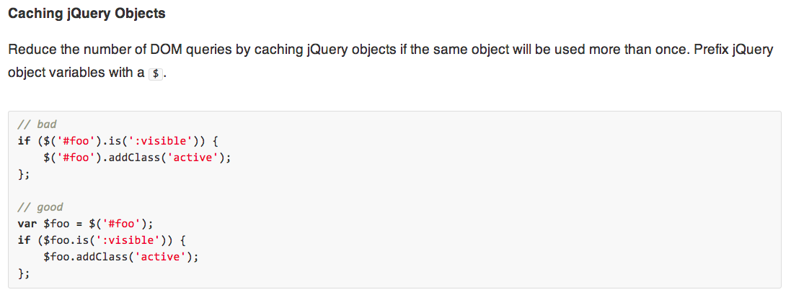

Freakin' WhiteSpace
Building a JavaScript Style Guide
Liz Lee
@lizlux
Front End Engineer @Wikia
Front End Coding Conventions Team
My Goal
You too, can have a style guide...
In less than 6 months!
"The social universe for fans by fans"
"Create your own wiki, we'll host it!"
Awesomeness:
- Open source
- Community driven
- Ridiculous amounts of knowledge
- Great work/life balance ;)
Challenges:
- Heavily customized MediaWiki
- Scrappy startup
-
Growth:
- 2010: 40 Employees
- 2014: 236 Employees
- 600% in 4 years

Squeaky wheel...
... gets to lead the JavaScript Coding Conventions group!
Our Mission
As a developer, I want a clear and well documented guide covering coding conventions, patterns and best practices for JavaScript development at Wikia along with tools to help me in making my code compliant.
Key Principles
#1: Trust the code
$("#foo").addClass("active");
$("#foo").width(200);
$("#foo").click();
var $foo = $("#foo");
$foo.addClass("active");
$foo.width(200);
$foo.click();
$("#foo").addClass("active")
.width(200)
.click();
Code Smells
"Any symptom in the source code of a program that possibly indicates a deeper problem"
-Wikipedia
Smells
- Conditional complexity
- Mix-matched white space
- Long methods
- Long parameter lists
- Duplicate code
- etc.
Broken Windows Effect
Crime begets crime
Smelly code begets smelly code
$("#foo").addClass("active");
$("#foo").width(200);
$("#foo").click();
$("#foo").css('color','blue'); // WTF?!
$("#foo").text('derp!'); // >.<
"Fool me once..."
Rulez!
#2: Don't reinvent the wheel
As a developer, I want a clear and well documented guide covering coding conventions, patterns and best practices for JavaScript development at Wikia along with tools to help me in making my code compliant.
What we did wrong:
Wrote all the rules
Then looked at the tools
Freakin' Whitespace!
White space
Went with jQuery because why not?
Here's why not:
eatPretzels( type, function() {
return 'Yum!';
});
"Function with a callback, object, or array as the last argument: no space after the
last argument"
- jQuery Style Guide
MediaWiki
eatDoughnuts( type, function() {
return flavors['jelly'];
} );JSLint
JSLint
- Created by Douglas Crockford, in 2002
- “Discovered” JSON (created the spec)
- Author of JavaScript, The Good Parts
- 2002 - the wild west of JavaScript
- Mozilla 1.0
- Netscape
- IE6
JSLint Style Rules
- Whitespace set up to read like english:
- Spaces go after commas and colons, not before
- Spaces after
ifwhileforandfunctionas they would in English - No space between function name and invoking parentheses
backinthedaytheromansdidntusespacesorpunctuationandmisunderstandingsarosesotheyhadtoindroducespacesintotheirwriting
backintheday theromans didnt usespa cesorpunctuationa ndmisunder standingsa rosesotheyh adtoind roducespaces intotheirwriting
Language Rules
If there is a feature of a lanugage that is sometimes problematic, and if it can be replaced with another feature that is more reliable, then always use the more reliable feature.
~ Douglas Crockford
EQEQ "=="
// Bad
(foo == 0)
// Good
(foo === 0)JSLint
- Commonly used
- It works
- New employees might already be familiar
- Code quality tool compatibility
- js-beautify: "jslint_happy"
- JSHint
#3: Programmers are lazy
Good programmers are anyway!
It should be harder for us to fail than succeed.
- Pre-commit hooks
- IDE plugins
- auto-updating whitespace (js-beautify)
Tools
- JSHint
- JS-Beautify
- JSCS
JSHint
- Created by Anton Kovalyov in 2010
- Fork of JSLint
- Community driven
- More configurable and forgiving than JSLint
Your sadly pathetic bleatings are harshing my mellow.
~ Douglas Crockford
That is insanely stupid code. I am not going to dumb down JSMin for this case.
~ Douglas Crockford
JSHint
- JSHint.com
- Config: .jshintrc
- Ignore line or file
JS-Beautify
- Updates whitespace for you.
- Developers are lazy!
- "jslint_happy"
- Config: .jsbeautifyrc
JSCS
- JavaScript Code Sniffer
- Enforces whitespace and style rules
- Compliments JSHint
- Config: .jscs.json
- Ex: "requireCurlyBraces" and "requireSpaceAfterKeywords"
SCSS Style Guide
- Causes.com's scss-lint
- analyze-css
Resources
Other References
Questions?
liz at lizlux dot net
@lizlux